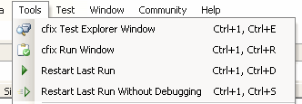
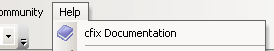

Quick Start
You have successfully installed cfix studio.Overview
In the Tools menu, you will now find four new commands:
Similarly, the Solution Explorer context menu has been extended by two additional commands:

Examples
To get started using cfix studio, you can take a look at the example projects: In the installation folder, you will find an archive examples.zip containing a set of Visual Studio example projects.Documentation
Further information and the API reference can both be found online and in the HTML Help File. The Help menu also contains a command that takes you to the documentation: